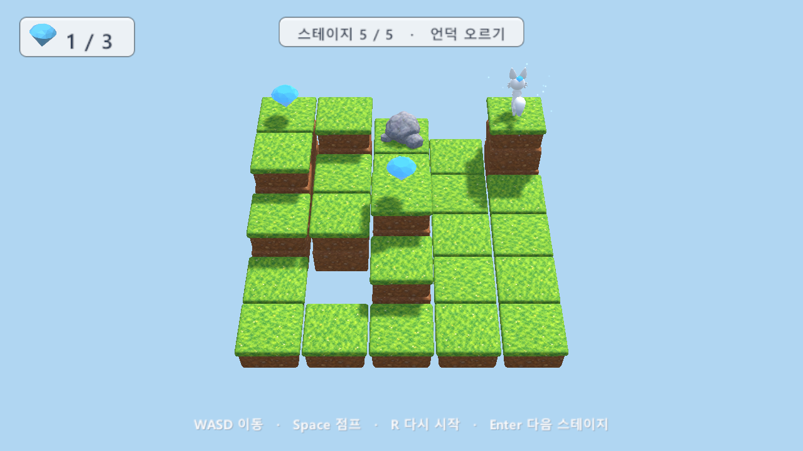
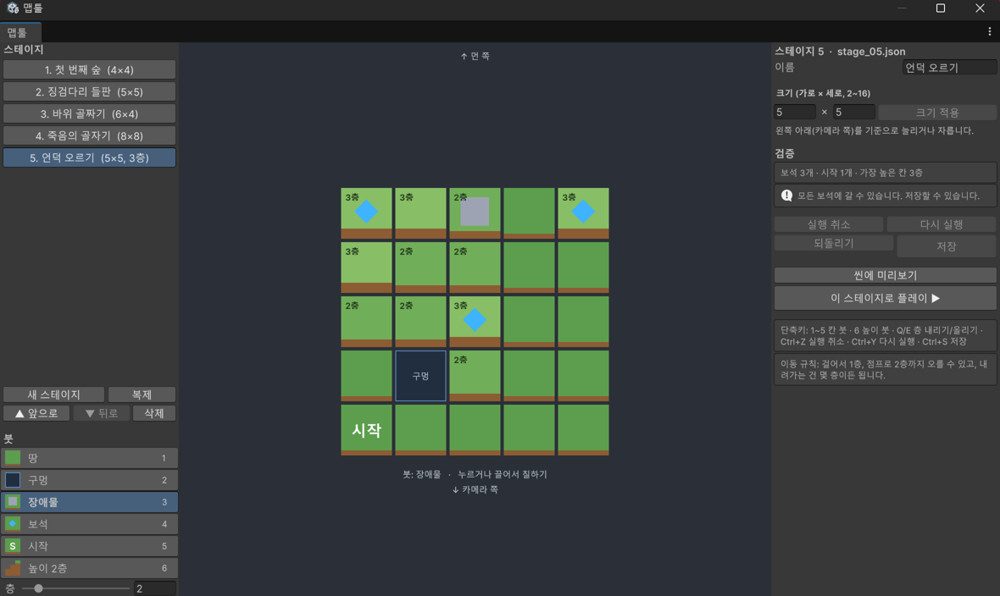

한 보드 안에서 칸마다 층(높이)을 정할 수 있게 했습니다. 여우는 걸어서 1층, 점프(Space)로 바로 앞 칸 2층까지 뛰어오르고, 내려가는 건 몇 층이든 됩니다. 맵툴에서 높이 붓으로 층을 칠하고, 스테이지 파일은 버전 2 형식으로 저장됩니다.
바로 옆 칸이 1층 높은 데까지. 2층 이상 높으면 벽이라 부딪히고 방향만 바뀝니다.
바로 앞 칸이 1~2층 높으면 그 위로 뛰어오릅니다. 앞 칸이 높지 않으면 두 칸 앞(최대 2층 높은 곳)으로 뜁니다.
칸마다 1~9층. 2층 이상은 흙 블록을 쌓고 맨 위에 잔디 타일을 얹습니다.
그림은 여우가 오른쪽으로 움직일 때를 옆에서 본 모습입니다. 기둥 하나가 한 칸이고, 블록 한 개가 한 층입니다.
1층 높은 칸은 걸어서 올라섭니다.
벽에 부딪혀 제자리. 방향만 그쪽으로 바뀝니다.
바로 앞 칸이 1~2층 높으면 Space로 그 칸 위에 올라섭니다.
바로 앞이 높지 않으면 두 칸 앞으로 뛰고, 2층 높은 곳까지 착지합니다.
바로 앞이 3층 이상 높으면 올라서지도, 넘어서 두 칸 앞으로 뛰지도 못하고 제자리.
걷기든 점프든 낮은 칸으로는 높이와 상관없이 내려갑니다.
지금 높이 그대로 그 위치까지 간 다음 떨어지고, 게임 오버입니다.
| 동작 | 목표 칸 | 결과 |
|---|---|---|
| 걷기 (WASD) | 땅, 높이 차 ≤ +1층 | 이동 |
| 걷기 | 땅, 높이 차 ≥ +2층 / 장애물 | 제자리 방향만 바뀜 |
| 점프 (Space) | 바로 앞 땅이 +1~+2층 | 이동 바로 앞 칸 위로 |
| 점프 | 그 밖: 두 칸 앞 땅, 높이 차 ≤ +2층, 가운데 칸이 출발·착지 중 높은 쪽보다 2층 이상 높지 않음 | 이동 두 칸 앞으로 |
| 점프 | 두 칸 앞이 +3층 이상 / 장애물 / 가운데 벽 | 제자리 제자리 점프 |
| 걷기·점프 | 구멍, 맵 밖 | 떨어짐 |
숫자는 MoveRules의 상수 WalkClimb = 1, JumpClimb = 2, WallOverJump = 2로 정해져 있습니다. 게임과 맵툴 검증이 같은 코드를 쓰므로, 상수를 바꾸면 둘 다 함께 바뀝니다.

rows와 같은 모양의 floors가 추가됐습니다. 숫자 하나가 그 칸의 층입니다. 구멍 칸의 숫자는 쓰이지 않습니다.
{
"version": 2,
"name": "언덕 오르기",
"width": 5,
"height": 5,
"rows": [ "G.#.G", ".....", "..G..", ".O...", "S...." ],
"floors": [ "33213", "32211", "22311", "11211", "11111" ]
}
floors가 없어서 모두 1층으로 읽습니다. 게임에서 그대로 쓸 수 있고, 맵툴에서 저장하면 버전 2로 바뀝니다.floors의 줄 수·길이가 rows와 다르거나 1~9가 아닌 글자가 있으면, 몇째 줄 몇째 글자가 틀렸는지 오류로 알려 줍니다.
| 파일 | 내용 | |
|---|---|---|
Scripts/Map/MapData.cs | 고침 | floors, FloorAt, SetFloor, HighestFloor. 크기 변경 때 층도 유지. 버전 2. |
Scripts/Map/MapJson.cs | 고침 | 버전 1 → 1층으로 읽기, floors 형식 검사. |
Scripts/Map/MoveRules.cs | 고침 | 걷기 +1층, 점프로 바로 앞 칸 +2층까지 뛰어오르기, 그 밖에는 두 칸 앞 점프(+2층까지), 가운데 벽 규칙. |
Scripts/Board/Board.cs | 고침 | 층만큼 흙 블록을 쌓고 잔디 타일을 얹음. 칸 좌표가 윗면 높이를 돌려줌 (FloorHeight, TopY). |
Scripts/Game/CameraFit.cs | 고침 | 가장 높은 칸까지 화면에 들어오게. |
Scripts/Fox/FoxController.cs | 고침 | 높이가 다른 칸으로 걸을 때 살짝 뛰어오르는 궤적, 점프로 오를 때 더 높은 궤적, 높은 곳에서 구멍으로 가면 그 높이에서 떨어짐. |
Editor/MapTool/* | 고침 | 높이 붓, 층 슬라이더, Q/E, 층 표시와 색, 목록·검증 정보. |
tiles/build_tiles.py → block.fbx | 새로 | 높은 칸 아래를 채우는 흙 블록 모델 (Blender). |
Resources/Stages/stage_05.json | 새로 | 예제 스테이지 "언덕 오르기" (5×5, 최고 3층, 보석 3개). |
EditMode 22개, PlayMode 12개. 높이와 관련해 새로 추가한 테스트는 아래와 같습니다. 모든 스테이지(직접 만드신 스테이지 4 포함)가 새 규칙의 검증도 통과합니다.
Version1FilesReadAsFirstFloor 옛 파일 읽기
FloorsRoundTripAndValidate 저장·읽기, 잘못된 층
WalkClimbsOneFloorAndStepsDownAny
JumpClimbsTwoFloors
JumpLimits +3층, 높은 벽
JumpOntoHigherCellJustAhead 바로 앞 높은 칸으로 뛰어오르기
ResizeKeepsFloors
ValidatorUsesFloors 높아서 못 가는 보석
ClimbingFloors 실제 게임에서 오르기·막힘·점프